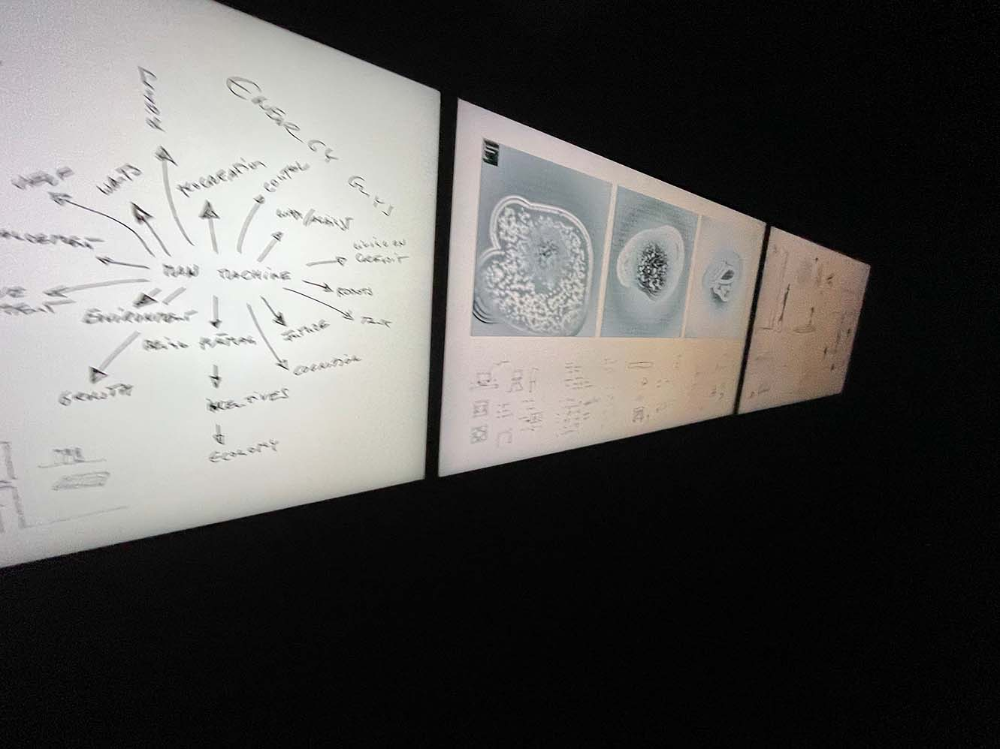
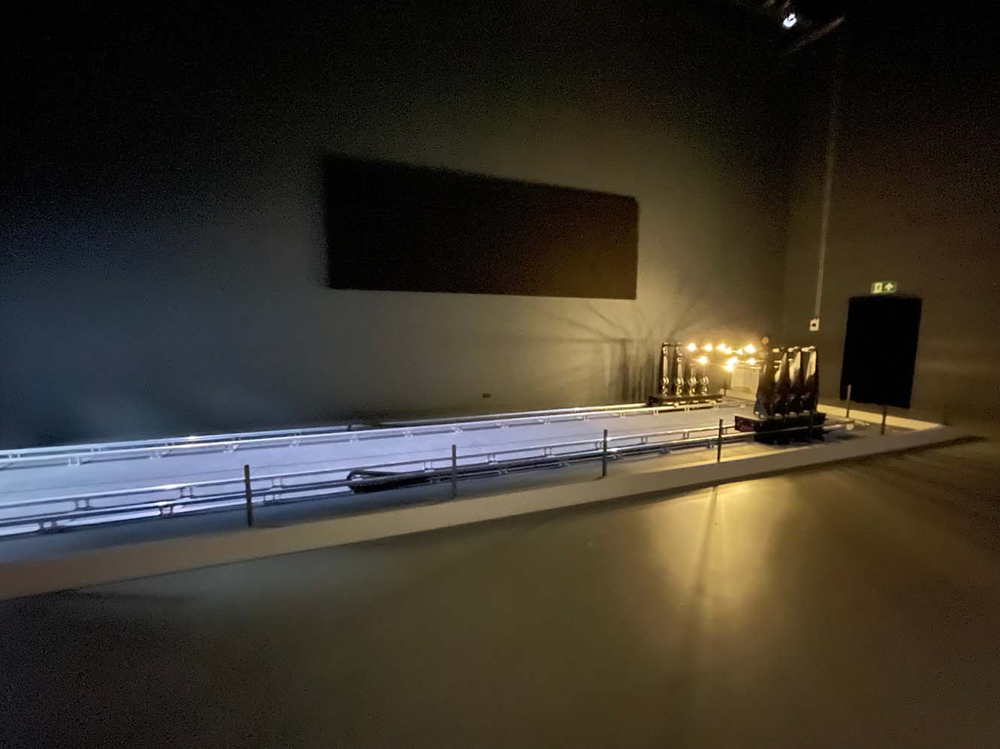
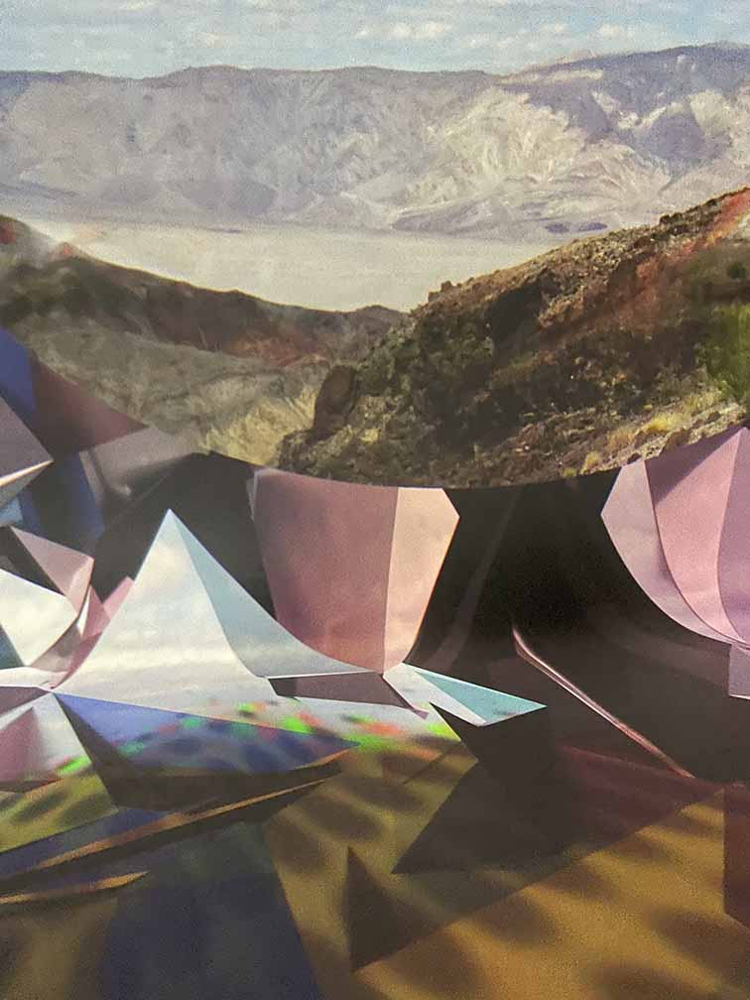
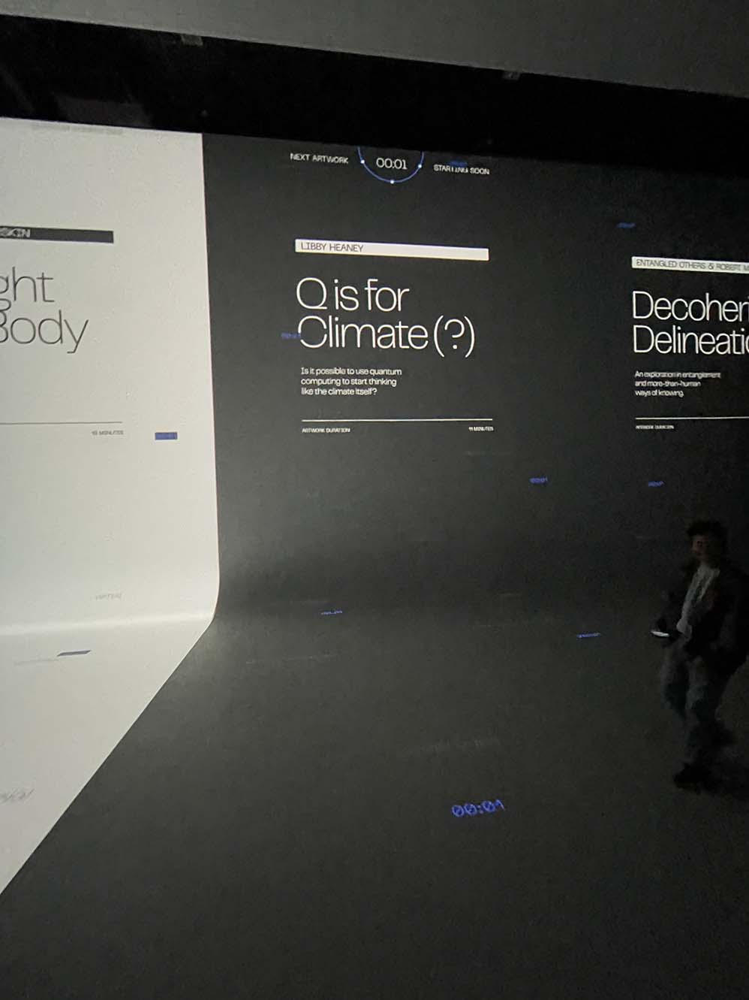
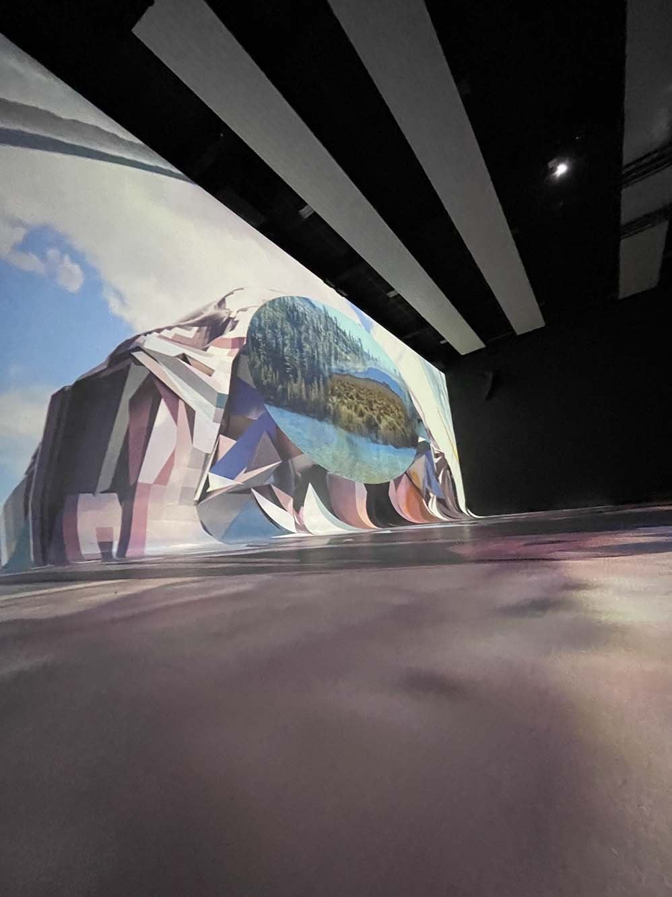

NXT museum

Nxt Museum is the first museum in the Netherlands to focus entirely on media art. We exhibit artworks that use modern technologies of the present and future. Because art reflects the spirit of the times, we believe that the most innovative art gives us the opportunity to reflect on the impact of technological developments. A moment of reflection in a reality that continues to evolve faster and faster.
Reviews
History
The museum is located in a former production studio in the heart of Amsterdam-North. A place ideally suited for discovering, making and exhibiting media art. This form of art experiments with technological possibilities and applications; dynamic and not bound to a form. Our space provides an incubator for this form of art; A place where different art movements and sciences can come together and be exhibited. A place for live performances, education, creation, song, dance and more.
Collection
- 
- 
- 
-

- 
- 
Dit artikel is geschreven voor een school opdracht, waarbij we een site moesten maken van het NXT museum